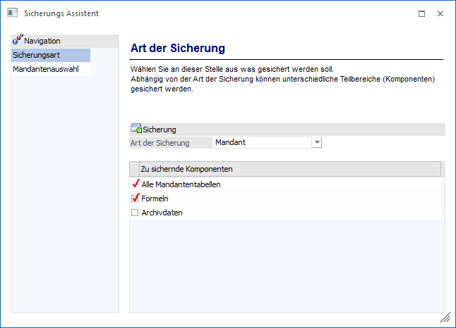

Jeder Datenstand sollte in bestimmten Zeitabständen gesichert werden. Die Zeitspannen, die zwischen den einzelnen Sicherungen liegen, hängen davon ab, wie viel sich der jeweilige Datenstand verändert.
Grundsätzlich sollte jeder Datenstand regelmäßig gesichert werden (täglich, wöchentlich, nach einem Monatsabschluss etc.).
Standardroutine der WinLine
Die WinLine bietet die Möglichkeit, die aktuellen Daten (Mandanten) aber auch die Systemeinstellungen bzw. mandantenunabhängigen Daten zu sichern. Die Sicherung erfolgt über den Menüpunkt…
1 WinLine ADMIN
1 Datei
1 Sichern
… wobei Sie mit einem Assistenten durch die einzelnen Eingaben geführt werden.

Folgende Schritte sind bei einer Sicherung möglich, wobei eine detaillierte Beschreibung den nachfolgenden Kapiteln entnommen werden kann:
ü Art der Sicherung
Im ersten Schritt
wird gewählt, welche Art von Daten gesichert werden sollen.
ü Mandantenauswahl
In diesem Schritt
kann der zu sichernde Mandant gewählt werden.
ü Mehrere Mandanten sichern
In diesem
Schritt muss gewählt werden, welche Mandanten gesichert werden sollen.
Standardmäßig werden immer alle Mandanten zur Sicherung vorgeschlagen.
ü Sicherungsdatei auswählen
In diesem
Schritt muss die Datei angegeben werden, in welche gesichert werden soll.
ü Backup Methode
In diesem Schritt
kann definiert werden, ob die Sicherung serverspezifisch durchgeführt werden
soll oder nicht.
ü Beschreibung
In diesem Schritt kann
eine genaue Beschreibung für die Sicherung eingegeben werden
ü Datenbank sichern
In diesem Schritt
wird das Sicherungsverzeichnis einer Datenbanksicherung hinterlegt.
ü Sicherung durchführen
Im letzten
Schritt einer Standardsicherung werden alle Eingabe nochmals
zusammengefasst.
Buttons
Ø Ok
Durch Anwahl des Buttons "Ok" bzw. der Taste F5 wird die Sicherung gestartet.
Hinweis
Der Buttons wird erst dann zur Verfügung gestellt, wenn alle notwendigen Eingaben im Assistenten getätigt worden sind.
Ø Ende
Durch Anwahl des Buttons "Ende" bzw. der Taste ESC wird der Assistent geschlossen und keine Sicherung durchgeführt.
Ø Zurück / Vor
Mit Hilfe der Buttons "Vor" und "Zurück" kann zwischen den unterschiedlichen Schritten des Assistenten gewechselt werden.